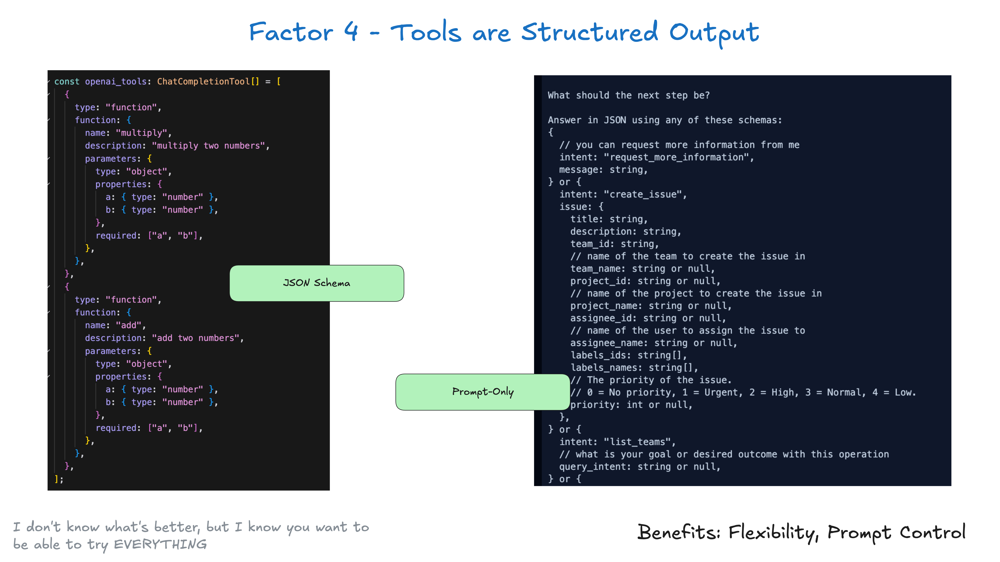

4. 工具就只是結構化輸出（Tools are just structured outputs）
工具不必複雜。本質上，它們只是 LLM 的結構化輸出，用來觸發確定性程式碼。

舉例來說，假設你有兩個工具 CreateIssue 和 SearchIssues。要 LLM「使用幾個工具中的一個」，就只是要它輸出我們能解析成物件、代表那些工具的 JSON。
class Issue:
title: str
description: str
team_id: str
assignee_id: str
class CreateIssue:
intent: "create_issue"
issue: Issue
class SearchIssues:
intent: "search_issues"
query: str
what_youre_looking_for: str模式很簡單：
- LLM 輸出結構化 JSON
- 確定性程式碼執行對應的動作（例如呼叫外部 API）
- 把結果收集起來，再餵回脈絡
這在 LLM 的決策與應用程式的動作之間，切出一道乾淨的分界。LLM 決定做什麼，你的程式碼控制怎麼做。LLM「呼叫了一個工具」，不代表你每次都得用同樣方式去執行某個對應的函式。
回想一下上面那個 switch 陳述式：
if nextStep.intent == 'create_payment_link':
stripe.paymentlinks.create(nextStep.parameters)
return # or whatever you want, see below
elif nextStep.intent == 'wait_for_a_while':
# do something monadic idk
else: #... the model didn't call a tool we know about
# do something else注意：關於「純提示」對上「工具呼叫」對上「JSON 模式」各自的優點與效能取捨，已經有很多討論。我們之後會補上一些資源連結，這裡先不深入。可參考 提示、JSON 模式、函式呼叫、受限生成與 SAP 的比較、何時該用函式呼叫、結構化輸出或 JSON 模式，以及 OpenAI JSON 與函式呼叫的比較。
「下一步」不一定像「跑一個純函式並回傳結果」那麼原子。把「工具呼叫」想成「模型輸出 JSON，描述確定性程式碼該做什麼」，你會解鎖很多彈性。把這一點和要素 8：自己掌握控制流放在一起看。